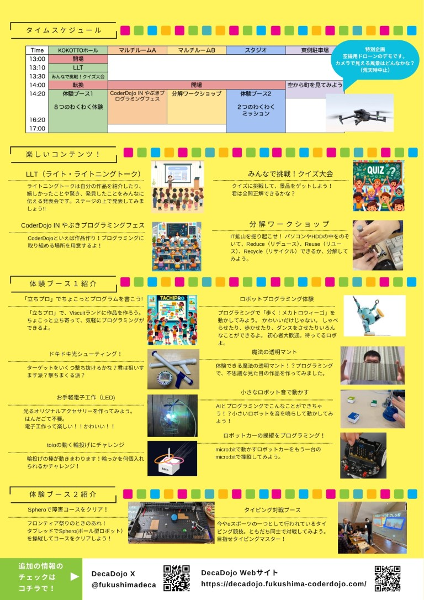

2024年6月15日（土）福島県、矢吹町
矢吹町複合施設KOKOTTO（ココット）で
「やぶきプログラミングフェス with DecaDojo 開催決定！
でかドージョーについて
about deca dojo
福島県内のCoderDojoが集まって、プログラミングを楽しむお祭りです。
昨年は会津若松で開催され、200人ほどが集まった大盛況のイベントとなりました。
今年は矢吹プログラミングフェスとコラボ開催となります！
でか（Deca）は、日本語で「大きい」を意味する「でかい」と、10倍を表す単位 [deca] をかけてます。
いつもと違う大きな会場で、みどころ10倍！楽しさ10倍！
プログラミングに興味のある子どもたち、ニンジャのみんな！参加まってるよ！
詳細
Detail
- 日にち
- 2024年６月15日 土曜日
- 場所
- 矢吹町複合施設KOKOTTO（ココット）
福島県西白河郡矢吹町本町165 - 地図
- Google Map
- 時間
- 13:00開催（12:30開場）
- 対象
- 福島県内の小学生・中学生・高校生とその保護者
- 参加費
- 無料
- 駐車場
- 近隣駐車場をご利用ください
- 小学生は保護者同伴でお願いします
当日のタイムテーブルはこちら
here's a timetable on the day
{kind=link}
CoderDojo（コーダードージョー）とは
About Coderdojo
CoderDojoは子供たちが自主的にプログラミングを学ぶ場を提供する無償の取り組みです。
地域の企業に勤めているITエンジニアや有志達がボランティアで運営しています。
世界で2000、国内にも220以上の活動拠点があります。
行動規範
Code of Conduct
やぶきプログラミングフェス with DecaDojoは、下記の行動規範に基づき活動します。
- CoderDojoとは、子どもたちに「プログラミングを学ぶ場を提供するボランティア活動」であり、活動の中心は子どもたちであることを理解します。
- すべての参加者（子ども、メンター、保護者、その他関係者）に対して礼儀正しく振舞い、決して尊大な態度をとりません。
- すべての参加者と仲良く活動し、差別的・否定的な言動を行いません。
- 会場内での安全に配慮し、福島でかドージョーが安全かつ円滑に開催できるように行動します。
- CoderDojoの趣旨に賛同するスポンサーが会場を提供していることを理解し、会場の設備・備品等の扱いに注意するとともに場内を清潔に保つように努めます。
- CoderDojoの活動において知り得た、参加者の個人情報を、本人の同意なしに他人に提供したり、公開したりしません。
- CoderDojoにおいて、商業的・政治的・宗教的な宣伝および勧誘を一切行いません。ただし、商業的なものであって、CoderDojoの活動に即したものであると考える場合は、事前に主宰者の承諾を得ることを条件に、告知できるものとします。
- 上記の内容に反する言動・行動を見かけたときには、ただちに主宰者に報告し、適切な対応を行います。
Presented by 福島県のCoderDojo